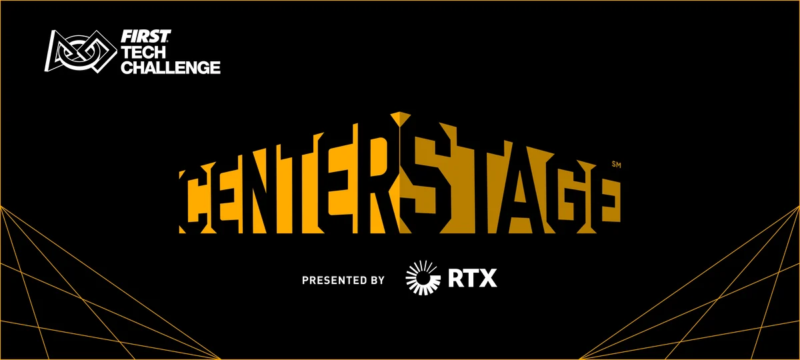

Tech-X
Sezoane
Sezon #8 (2023-2024)
Sezon #7 (2022-2023)
Sezon #6 (2021-2022)
Sezon #5 (2020-2021)
Sezon #4 (2019-2020)
Apariții în presă
Contact
Tech-X
Apariții în presă
Sezon #8 (2023-2024)
Sezon #7 (2022-2023)
Sezon #6 (2021-2022)
Sezon #5 (2020-2021)
Sezon #4 (2019-2020)
Contact
Pagină în curs de actualizare
